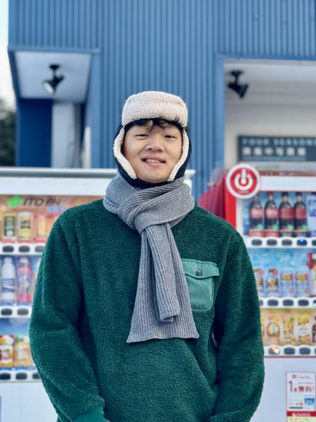

강동우
저는 현재 한국전자기술연구원(KETI)에서 연구원으로 재직중입니다. KETI에 합류하기 전에는 플랫폼 기업에서 소프트웨어 개발자로 인턴 근무를 했으며 CIT HCI College에서 사용자 경험에 관한 학습 후 프로젝트 발표를 했습니다.
저의 관심사는 주로 영상 처리(Image Processing)과 Physical AI를 기반으로 한 로봇의 상황 인지 기술에 초점을 두고 있지만 컴퓨터 비전과 지능형 로보틱스와도 밀접하게 연관되어 있기 때문에 폭넓은 관심을 두고 깊이 있게 학습하고 있습니다.
타임라인
-
연구원
경량 딥러닝 및 신호 전처리를 활용한 채널 신호 기반 행동 인식 분야의 연구를 진행해왔습니다. ICTC 및 ICCE-Asia에서 연구 결과를 발표했으며, 현재는 반도체 경량 고속 탐지 연구에 집중하고 있습니다.
-
IT 콘텐츠학과 학사
한신대학교에서 평점 4.11/4.5로 공학 학사 학위를 취득했습니다. 주로 AI 영상처리, 모바일 UI/UX 플랫폼 수업에서 높은 성적을 취득했습니다. 뿐만 아니라, 교외 활동으로 파이썬 및 iOS 개발 분야에서 인턴십을 통해 전문적인 기술 역량을 확보했으며 초등학생을 위한 코딩 교육 커리큘럼을 기획하고 운영했습니다.
수상 및 자격증
-
2024년 HCI 대학 컨퍼런스 우수상 수상
콤파노이드 연구소
-
AI 및 빅데이터 해커톤 우수상 수상
한신대학교
-
2020 - 2022
국가우수장학금(이공계) · 4학기
과학기술정보통신부
-
2016 - 2020
성적우수 전액 장학금 · 3학기
한신대학교
IoT 자격검정
AWS CSA
SQLD
정보처리기사
TEPS 320
IELTS 6.0